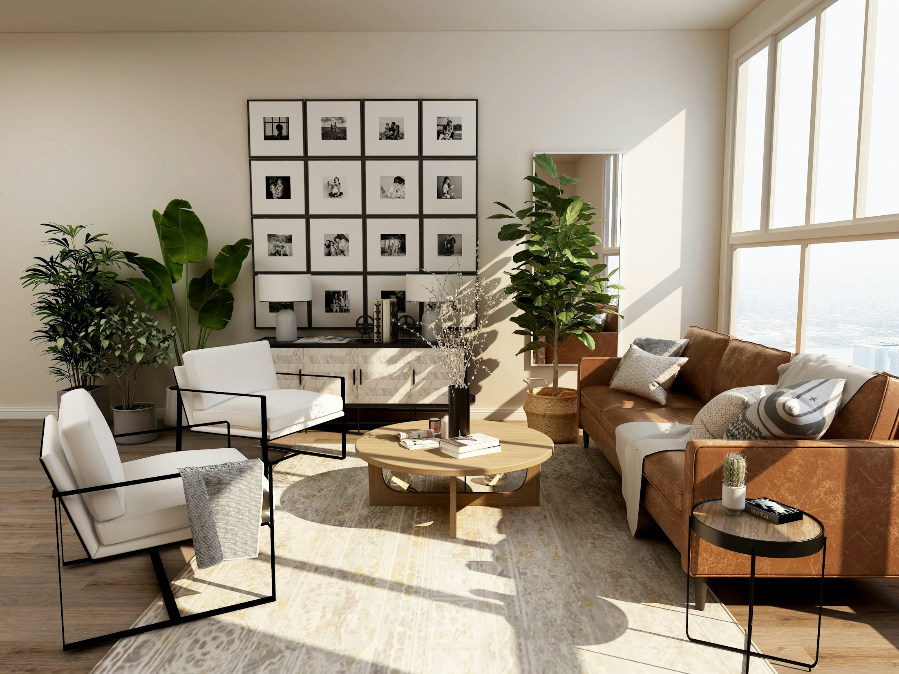

Studio fotograficzne & przestrzeń twórcza
TORUŃ, POLSKAKamera. Ludzie.
Magia.
Dwie sale, różnorodne scenografie i światło, z którym możesz tworzyć po swojemu. K.L.M. Art Space to miejsce na sesje zdjęciowe, spotkania i kreatywne pomysły w Toruniu.


01 / Poznaj K.L.M. Art Space
Nie tylko studio.
Przestrzeń
do tworzenia.
K.L.M. Art Space w Toruniu to studio fotograficzne i miejsce spotkań ludzi z pomysłami. Zapraszamy fotografów, artystów, twórców internetowych oraz wszystkich, którzy szukają inspirującej przestrzeni.
Organizujesz warsztaty, wystawę, kameralne spotkanie lub sesję zdjęciową? Porozmawiajmy o współpracy. Możesz też odwiedzić nas, poznać wnętrza i zobaczyć, jakie możliwości daje studio.
Zobacz naszą przestrzeń02 / Sale, sprzęt i tła
Wybierz swoją przestrzeń.
Do dyspozycji są dwie sale — Duża Sala i Biała Sala — oraz wyposażenie fotograficzne i kolorowe tła. Aktualna aranżacja sal może zmieniać się sezonowo.
Duża Sala
Przestrzeń do sesji portretowych, rodzinnych i kreatywnych realizacji. Różne tła i scenografie pozwalają dopasować charakter zdjęć do Twojego pomysłu.
Zdjęcia i dekoracje będą aktualizowane wraz ze zmianą aranżacji sezonowych. Przed rezerwacją możesz zapytać o aktualny wystrój.
Biała Sala
Jasna przestrzeń do sesji portretowych, dziecięcych, rodzinnych i tematycznych. W zależności od sezonu przygotowujemy różne dekoracje i fotograficzne zakątki.
Aranżacje sezonowe mogą się zmieniać. Aktualne fotografie sal dodamy do galerii.
Sprzęt i tła fotograficzne
Oświetlenie studyjne, modyfikatory światła i kolorowe tła pomagają tworzyć portrety, zdjęcia produktowe, beauty i materiały wideo.
Wyposażenie studia
- Godox Gemini GS400II — lampa błyskowa 400 Ws
- Godox Litemons LA200R — lampa RGB LED do fotografii i wideo
- GlareOne Easy Fold 60 × 90 cm — softbox z mocowaniem Bowens
- GlareOne — grid do softboxu 60 × 90 cm
- GlareOne Strappo Octa 120 cm — softbox z mocowaniem Bowens
- CineGEN — zestaw dwóch lamp światła stałego z softboxami
- Grifon RT-16 — radiowy synchronizator lamp studyjnych
Tła fotograficzne
Kolory prezentowane przez studio: różowy, malinowy, czarny, biały, błękitny, czerwony, brązowy i ciemnoszary. W ofercie znajdują się m.in. tła papierowe o szerokości 2,72 m oraz tła polipropylenowe o szerokości około 2,7–2,75 m. Dostępność konkretnego koloru i materiału potwierdź przed sesją.
Ważne: ustawianiem i podłączaniem oświetlenia oraz pozostałego sprzętu zajmuje się właścicielka studia. Nie należy samodzielnie montować, przestawiać ani regulować urządzeń bez jej zgody. Potrzebne ustawienie najlepiej zgłosić przed sesją.
Kolorowe tła są rozliczane osobno i nie wchodzą w cenę promocji na wynajem dwóch sal. Szczegóły poniżej.
Oferta i możliwości
Jedno miejsce.
Wiele pomysłów.
Wynajem studia fotograficznego
Duża Sala i Biała Sala na sesje indywidualne, rodzinne, portretowe, produktowe i kreatywne.
Sprawdź terminy ↗ 02Kolorowe tła i oświetlenie
Wybierz tło i omów potrzebne ustawienie sprzętu z właścicielką. Kolorowe tła mają osobny cennik.
Zobacz cennik ↓ 03Warsztaty, wystawy i spotkania
Przestrzeń dla fotografów, artystów, rękodzielników i organizatorów wydarzeń. Warunki ustalamy indywidualnie.
Skontaktuj się ↗Cennik i aktualna oferta
Zaplanuj swoją sesję.
Podane stawki pochodzą z opublikowanej oferty studia. Przed uruchomieniem rezerwacji online potwierdzimy aktualność promocji i cen.
Świąteczna oferta — Duża Sala + Biała Sala
Wynajem obu sal z przygotowaną świąteczną scenografią i oświetleniem studyjnym. Minimalny czas wynajmu: 1 godzina.
Poniedziałek–piątek: 130 zł/godz.
Sobota–niedziela: 160 zł/godz.
Promocja sezonowa. Kolorowe tła są dodatkowo płatne. Rezerwacje dokonane wcześniej na jedną salę zachowują pierwotną cenę; w sprawie zmiany na ofertę promocyjną skontaktuj się ze studiem.
Kolorowe tła fotograficzne — osobny cennik
Poniedziałek–piątek
30 min — 60 zł
1 godz. — 100 zł
2 godz. — 180 zł
5 godz. — 450 zł
8 godz. — 640 zł
Sobota–niedziela
30 min — 70 zł
1 godz. — 110 zł
2 godz. — 200 zł
5 godz. — cena na zapytanie
8 godz. — cena na zapytanie
Kolorowe tła można wynająć od 30 minut. Ich koszt nie jest wliczony w świąteczną ofertę wynajmu obu sal.
03 / Rezerwacja studia
Twój termin.
Twoja przestrzeń.
Wybierz salę i przejdź do rezerwacji. W kolejnym kroku podasz datę, godzinę, imię i nazwisko fotografa, numer telefonu oraz pozostałe dane kontaktowe.
Rezerwacja wymaga zadatku 50 zł. Docelowo termin będzie potwierdzany automatycznie po zweryfikowaniu płatności, a właścicielka otrzyma powiadomienie. System płatności i automatycznego potwierdzania jest w przygotowaniu — do jego uruchomienia potwierdzaj rezerwacje bezpośrednio ze studiem.
Ważne przed rezerwacją
Zasady rezerwacji.
Od 1 września rezerwacja terminu w K.L.M. Art Space wymaga wpłaty zadatku w wysokości 50 zł. Zadatek pozwala zarezerwować konkretny dzień i godzinę, które po potwierdzeniu nie są oferowane innym klientom.
- Odwołanie sesji. W przypadku rezygnacji zadatek 50 zł nie podlega zwrotowi.
- Zmiana terminu. Możliwa po poinformowaniu studia co najmniej 24 godziny przed rozpoczęciem sesji. Późniejsza zmiana oznacza utratę zadatku.
- Jedno przeniesienie. Rezerwację można przenieść tylko jeden raz.
- Nieobecność. W przypadku niestawienia się na sesji zadatek nie podlega zwrotowi.
- Spóźnienie. Ewentualne przedłużenie czasu sesji jest ustalane indywidualnie i zależy od dostępności studia.
Dokonanie rezerwacji oznacza akceptację powyższych zasad. Prosimy o przemyślane wybieranie terminów i wcześniejsze informowanie o zmianach.
Potrzebujesz specjalnego ustawienia lamp lub tła? Poinformuj właścicielkę przed sesją — sprzęt jest przygotowywany i ustawiany przez obsługę studia.
04 / Do zobaczenia w studiu
Porozmawiajmy
o Twoim pomyśle.
K.L.M. Art Space
Toruń, Polska
Dokładny adres — do uzupełnienia
Telefon: +48 732 592 169
Instagram: @klm_artspace_torun
E-mail — do uzupełnienia